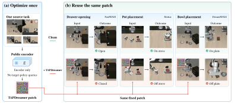
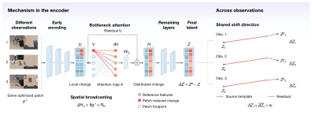
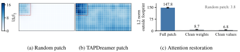

One source task
Use a small set of demonstration frames to optimize patch pixels with Adam while keeping encoder weights frozen.
WORLD ACTION MODEL SECURITY
A small, fixed patch. A frozen visual encoder.
Disrupted actions across tasks and models.
Optimized on observations from one source task, a local patch transfers across World Action Models using only a public visual encoder—no target-policy queries.

of the visual input
tasks across two benchmarks
FastWAM success under attack
CLOSED-LOOP EXECUTION
Pick up the book and place it in the back compartment.
External camera on the left; wrist camera on the right. The patch stays in the upper-left corner of the external view. Clips retain their original playback speed and duration.
ABSTRACT
World Action Models (WAMs) rely on camera inputs to build representations for prediction and control. TAPDreamer is a transferable, fixed local patch whose pixel optimization uses only a public visual encoder and requires no target-policy queries. It maximizes the mean L1 distance between clean and patched encoder outputs over all latent positions and channels.
One frozen patch per benchmark, covering about 6.5% of the input, reduces FastWAM’s success rate from 97.65% to 0.00% across 40 LIBERO tasks and from 90.86% to 0.00% across 50 RoboTwin tasks. Matched random patches retain 81.45% and 79.20% success. The same patches also transfer to DreamWAM and Motus.
Mechanism analysis connects these failures to attention-mediated spatial spreading and a shared representation shift across observations. The results highlight the need to secure the visual encoders shared by downstream world and action models.
METHOD
Patch construction uses the encoder alone. Deployment keeps the patch fixed.

Use a small set of demonstration frames to optimize patch pixels with Adam while keeping encoder weights frozen.
Keep the optimized content, area, and position unchanged across observations and tasks.
Apply the same patch to other downstream WAM architectures within the benchmark.
EXPERIMENTS
Closed-loop task success rate (%). Lower success means a stronger attack.
LIBERO: 50 trials per task. RoboTwin: 100 trials per task. The random patch matches patch position and area. Results from Table 1.
| Benchmark | Victim model | Clean | Random | TAPDreamer |
|---|---|---|---|---|
| LIBERO | DreamWAM-uncond | 97.50 | 84.55 | 1.45 |
| LIBERO | DreamWAM-joint | 97.70 | 86.10 | 1.00 |
| RoboTwin | Motus | 86.62 | 82.40 | 10.60 |
Transfer is evaluated within each benchmark without target-model feedback for reoptimization.
MECHANISM
Spatial broadcasting inside the encoder. Consistent shifts across observations.

Median fraction of squared final-latent change outside the patch footprint, versus 1.3% for a matched random patch (48 states; Table 3).
Median cosine similarity between held-out latent changes and a source-task template, versus 0.716 for the random patch (Table 4).
